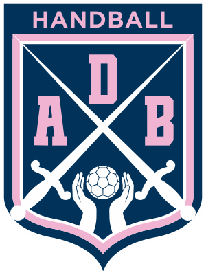

Ateneo Don Bosco · Handball · Bernal
Plan de sponsoreo 2027. Diez planteles, doce categorías y una tribuna que viene todos los fines de semana.
Quiénes somos
El Ateneo Don Bosco tiene handball desde las Minis hasta el Maxi: chicas y chicos que entrenan toda la semana y juegan el fin de semana, y las familias que los acompañan.
Competimos en FeMeBal en diez planteles. La Primera damas pelea el ascenso a la Liga de Honor Plata y las Infantiles son punteras de su zona.
A quién le hablás
No te ve la jugadora: te ve la madre y el padre que la llevan.
Seis de cada diez personas que siguen al club tienen entre 25 y 44 años, y ocho de cada diez entre 25 y 54. Son los que hacen las compras del barrio.
El 68% son mujeres.
Dónde te ve la gente
Lo que medimos
Desde octubre de 2026 la web cuenta cuánta gente entra cada día y cuántos tocan cada espacio de sponsor.
No es una estimación: es el número real de clics en tu logo, tu cupón y tu enlace. Va en el reporte mensual, en todos los niveles.
La camiseta, en vivo
Todos los fines de semana FeMeBal juega en la Casa del Handball Argentino, su estadio del Parque Olímpico: dos equipos por categoría y por liga, sábado y domingo. A cada plantel del club le toca su fecha ahí, y esos partidos se transmiten enteros, en vivo, por YouTube y por televisión.
No es un logo quieto en una pared: es una hora de juego con tu marca en el pecho, en cámara, y un video que queda publicado. La próxima es la Cuarta caballeros, el lunes 12 de octubre.
Para qué niveles
Es el argumento de Camiseta y Sensus: son los dos que ponen la marca en la ropa, y la ropa es lo único que viaja con el plantel a la transmisión.
Los cuatro niveles
Para el comercio de la cuadra que quiere estar cerca.
Para el que quiere que lo vean todos los fines de semana.
Para la marca que quiere quedarse todo el año.
Un solo sponsor por temporada. El que le pone el nombre al año.
Valores de octubre de 2026, se revisan cada seis meses. Acuerdos por temporada, de marzo a noviembre. El pago de la temporada completa por adelantado tiene 15% de descuento. También tomamos acuerdos en productos o servicios.
Todos los meses
El primer viernes de cada mes te llega un correo con tus números del mes anterior:
Por qué importa
Un sponsoreo de club se suele pagar a ciegas. Acá no: sabés cuánta gente te vio y podés decidir el año que viene con datos.
Es la misma información que usamos nosotros para saber qué espacios funcionan.
Sensus pertinendi
Ser sponsor del Bosco es estar en la camiseta de las pibas del barrio, en la tribuna de los sábados y en el teléfono de las familias. Charlemos qué lugar querés ocupar.